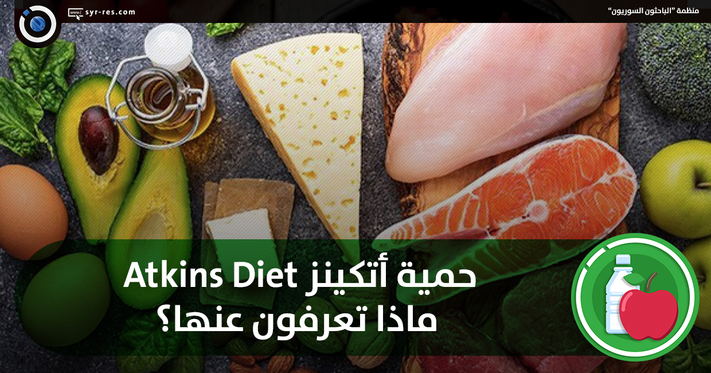

نظام أتكنس للتغذية هو نظام غذائي يركز على تقليل استهلاك الكربوهيدرات وزيادة استهلاك البروتينات والدهون. يحمل اسمه على اسم الدكتور روبرت أتكنس، الذي قدم النظام في كتابه "نظام أتكنس: الثورة في التغذية" (Dr. Atkins' Diet Revolution) في العام 1972
اللحوم، الأسماك، الدواجن، البيض، الألبان، الخضروات ذات الألياف العالية مثل السبانخ والبروكلي، المكسرات والبذور، الزيوت الصحية مثل زيت الزيتون وزيت جوز الهند.
يهدف إلى تحفيز الجسم على حرق الدهون بدلاً من الكربوهيدرات لإنتاج الطاقة. يشجع على تناول الأطعمة ذات القيمة الغذائية العالية ومنع الأطعمة الغنية بالكربوهيدرات.